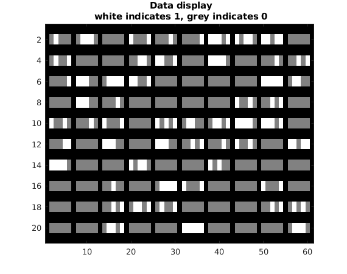
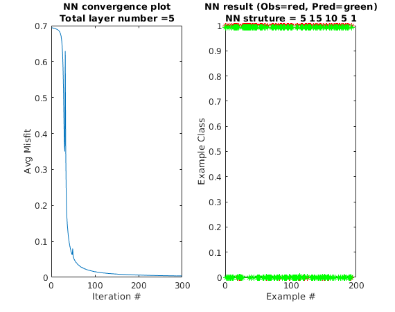

Contents
- Simple Neural Network LAB
- ================= Set up input =================
- ================= Set up parameters for NN structure=================--------------------------------------------------------------------------------
- ================ Initializing Pameters for Training ================
- =================== Training NN ===================
- ================= Implement Predict =================
- ================= gradientnn.m (for display) =================
- Setup some useful variables
- Part 1: Feedforward the neural network and return the cost in the variable res.
- Part 2: Implement the backpropagation algorithm to compute the gradients.
- ================= misfit.m (for display) =================
- ================= activation.m (for display) =================
Simple Neural Network LAB
Learn how to to do forward and backward propogation according to chsingle.pdf by Gerard Schuster coded by Zongcai Feng and Gerard Schuster
% This is the main program to run Neural Network % It involves function % gradientnn.m - Neural network cost function and gradient calculation % misfit.m - Objective function and gradient with repected to predicted output % (currently have likelihood and L2) % activation.m - activation function and gradient with repected to Z (currently use sigmoid and ReLU) % Displaynn.m - predict the output and plot
================= Set up input =================
clear ; close all; clc % x(N,M) - input- M input feature vectors with size Nx1 M=100; % # of equations constraint N=5; % # of unknowns (w0, w1, wN-1) x=zeros(N,M); for i=1:M x(:,i)=round(rand(N,1)); end % ---- to balance the number of 0 examples and 1 exmaples ----- is0_token=0; for i=1:M if sum(x(:,i))==0 is0_token=is0_token+1; end end x=[zeros(N,M-is0_token),x]; M=size(x,2); rank = randperm(M); x=x(:,rank); % ----------------giving labels----------------------------------------------- t=zeros(M,1);tp=t; for i=1:M if sum(x(:,i))==0 t(i)=1; end end % Randomly select 100 data points to display sel = randperm(M); sel = sel(1:100); displayData(x(:, sel)',N);

================= Set up parameters for NN structure=================--------------------------------------------------------------------------------
display('-----------------------------------------------------------Instruction of NN structure---------------------------------------------------------------------------------------'); display('The NN code requires the input the number of nodes in each layer.'); display('(The layers defines in this NN structure do not include the layers for input feathuires but include the layers for output labels)'); display('(E.g:[15,10,5,1], three hidden layers and their nodes numbers are 15,10,5, respectively, 1 is the ouptlayer, consistent with variable)'); display('-------------------------------------------------------------------------------------------------------------------------------------------------------------------------------------- '); %layer_temp=input('Please input the number of nodes in each layer: '); layer_temp=[15,10,5,1]; display(' '); %obj_option=input('Please input the objective function type, 1 for L2 norm, 2 for likelihood: '); obj_option=2; display(' '); %act_option=input('Please input the active function type, 1 for sigmoid norm, 2 for ReLU: '); act_option=2; layer_size=[N,layer_temp]; % layer_size include the input and output layer layer_num=numel(layer_size); %layer number include the input and output
-----------------------------------------------------------Instruction of NN structure--------------------------------------------------------------------------------------- The NN code requires the input the number of nodes in each layer. (The layers defines in this NN structure do not include the layers for input feathuires but include the layers for output labels) (E.g:[15,10,5,1], three hidden layers and their nodes numbers are 15,10,5, respectively, 1 is the ouptlayer, consistent with variable) --------------------------------------------------------------------------------------------------------------------------------------------------------------------------------------
================ Initializing Pameters for Training ================
initialize the weights of the neural network with random number
for ilayer=1:layer_num-1 ww{ilayer}=rand(layer_size(ilayer+1),layer_size(ilayer)+1)*0.1; end alpha=1; % step size nit=300; % total interation res=zeros(nit,1); %used to record the objetive function value in every iterations kk=0; lambda = 0.0; %for regularization, if add regularization, suggest lambda<0.01
=================== Training NN ===================
To train your neural network, we will now use steepest decent and line search
fprintf('\nTraining Neural Network... \n') for k=2:nit % Looping over iterations alpha=1; %gradientnn ouput: grad is the gradient and res(k) is the objetive function value [grad,res(k)]=gradientnn(M,x,t',ww,layer_size,obj_option,act_option,lambda); %update the weights for ilayer=1:layer_num-1 ww{ilayer}=ww{ilayer}-alpha*grad{ilayer}; end %---------------line search----------------------------------------------------------- [~,res1]=gradientnn(M,x,t',ww,layer_size,obj_option,act_option,lambda); while (res1>res(k)) && (alpha>0.00001) alpha=alpha*0.5; for ilayer=1:layer_num-1 ww{ilayer}=ww{ilayer}-alpha*grad{ilayer}; end [~,res1]=gradientnn(M,x,t',ww,layer_size,obj_option,act_option,lambda); end %------------------------------------------------------------------------------- %kk=kk+1 end
Training Neural Network...
================= Implement Predict =================
After training the neural network, you will now implement the "Displaynn" function to use the neural network to predict the labels of the training set.
figure(4);Displaynn(M,res,nit,ww,layer_size,x,t,act_option);pause(0.5)

================= gradientnn.m (for display) =================
function [grad,res]=gradientnn(M,x,t,ww,layer_size,obj_option,act_option, lambda);
% output: % res - objective function value % grad - (objective function respective to weights) % % Input: % M - # data examples %(x,t)- Training data pairs %ww- filter for all layers % t - # observed data % layer_size - indicate nn structure %obj_option=1 for L2, 2 for likelihood %act_option=1 for sigmoid, 2 for ReLU % Part 1: Feedforward the neural network and return the cost in the % variable res. % % Part 2: Implement the backpropagation algorithm to compute the gradients. % You should return the partial derivatives of the cost function with % respect weight, respectively. After implementing Part 2, you can check % that your implementation is correct by running checkNNGradients % % Note: The vector y passed into the function is a vector of labels % containing values from 1..K.
Setup some useful variables
layer_num=numel(layer_size); %layer number include the input and output aa{1}=x; %first layer is the input layer penalize=0;
Part 1: Feedforward the neural network and return the cost in the variable res.
% Do forward propagation for iter =1:layer_num-1 %%%----- N (in book) ------%%% % ones(1, m) is for bias aa{iter} = [ones(1, M); aa{iter}]; %%%----- z[n]=W[n]a[n-1] ------%%% zz{iter}=ww{iter}*aa{iter}; %%%----- a[n]=g(z[n])------%%% if iter ==layer_num-1 %output layer has to use sigmoid [aa{iter+1},~] = activation(zz{iter},1); else [aa{iter+1},~] = activation(zz{iter},act_option); end %Add some regularization penalize =penalize+ sum(sum(ww{iter}.^ 2)); % include regularization for bias end % final output for forward propagation Ypred t_pred = aa{layer_num}; % calculate the objective function and the dirivative of objective function with respect to t_pred using likelihood or L2 type %obj_option=1 for L2, 2 for likelihood [res,in]= misfit( t_pred,t,1/M,obj_option); % add regularization res = res + (lambda/(2*M)) * penalize;
Part 2: Implement the backpropagation algorithm to compute the gradients.
writen according to Backpropagation Operation
% Implement backpropagation for iter=layer_num-1:-1:1 %'sigmoidgrad' means compute the gradient of the sigmoid function if iter ==layer_num-1 %output layer has to use sigmoid [~,dg]=activation(zz{iter},1); else [~,dg]=activation(zz{iter},act_option); %%%----- in=dg[i].*in (in book) ------%%% end in=dg.*in; % in is the backward field, A is the forward field grad{iter}=in*aa{iter}'+ (lambda/M) * ww{iter}; %%%----- de(j,k)=in*(a[i-2])T (in book) ------%%% % update in for calculation of the gradient with respect to next weights in=ww{iter}'*in; %%%----- in=W'[i]*in (in book) ------%%% in = in(2:end, :); end
end
================= misfit.m (for display) =================
objective function
function [ J,in ] = misfit( Y_pred,Y_obs,scale,type) %misfit function % %input: %Y_pred: predicted value %Y_obs: observed vakue %scale: scale the misift %type: objetive function type: 1 for L2, 2 for likelihood % %e.g: J=0.5*scale*||Y_pred-Y_obs)||2 %output: % J is the value of the objective function % in is the gradient of J with respective to Y_pred if type==1 % for L2 norm objective function %J = sum( sum( (Y_pred-Y_obs).^2 ) ); J = sqrt(sum( sum( (Y_pred-Y_obs).^2 ) )); %adjust from Jerry in = 2*(Y_pred-Y_obs); elseif type==2 % for likelihood objective function J = sum(sum(-Y_obs.*log(Y_pred) - (1-Y_obs).*log(1-Y_pred))); in = -Y_obs./Y_pred + (1-Y_obs)./(1-Y_pred); % dJ / d Y_pred else display('You entered the wrong type for the misfit function'); stop end J=J*scale;in=in*scale; end
================= activation.m (for display) =================
activation function
function [ g,dg ] = activation( z,type ) %activation function % %input: %z: input for atviation function %type: objetive function type: 1 for sigmoid, 2 for ReLU % %output: % g is the value of the activation function % dg is the gradient of g with respective to z if type==1 % for sigmoid g = 1.0 ./ (1.0 + exp(-z)); dg = g .* (1 - g); %Compute the gradient of the sigmoid function elseif type==2 % for ReLU g=z*0.0; dg=z*0.0; g(z>0)=z(z>0); g(z<=0)=z(z<=0)*0.0; dg(z>0)=1.0; dg(z<=0)=0.0; else display('You entered the wrong type for the activation function'); stop end end